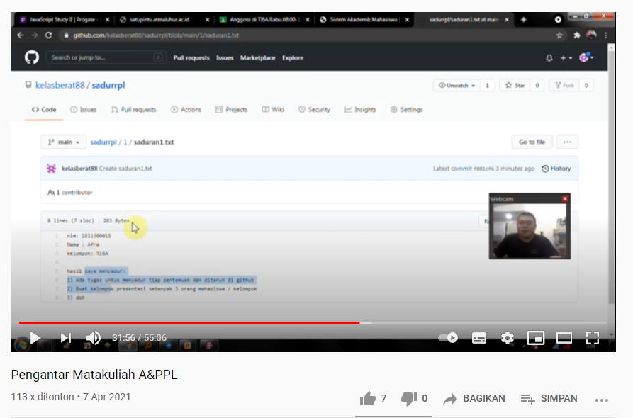

nim : 1811500001
nama : yolanda
kelompok : ti6j
hasil saya menyadur pertemuan 1 :
1) ada tugas untuk menyadur tiap pertemuan dan ditaruh di github
2) buat kelompok persentasi setiap 3 orang mahasiswa perkelompok
3) membuat akun github dipertemuan pertama
4) setelah akun github dibuat ,dan selanjutnya kita membuat saduran pertama untuk pertemuan pertama
dan untuk pertemuan selanjutnya
5) dan dipertuman pertama diajarkan bagaimana menggunakan github
6) dan mengerjakan arahan yang diberikan dosen contohnya sadurrpl , saduran 1txt dan bagaimana memasukan gambar kedalam saduran yang
dibuat
7) setelah selesai membuat saduran atau tugas dipertemuan pertama , lalu dikumpulkan ke dosen mata kuliah analisa dan perancangan rpl
menggunakan link yang disalin dan dikirimkan kedosen mata kuliah tersebut.
